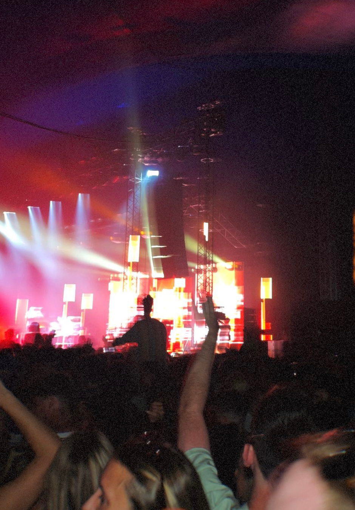
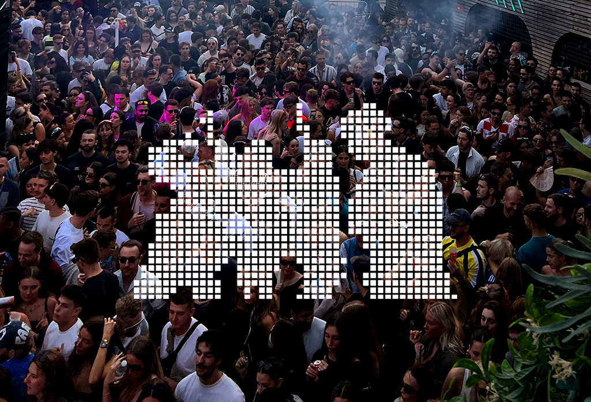
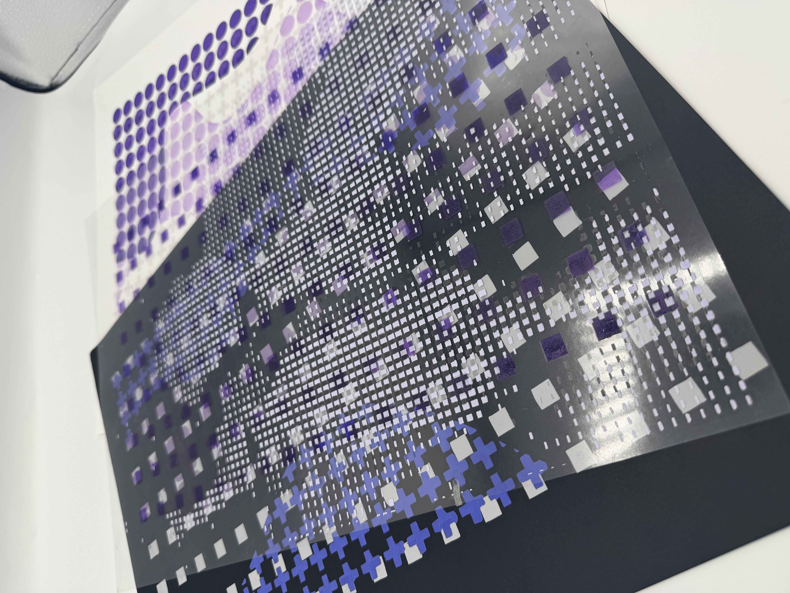
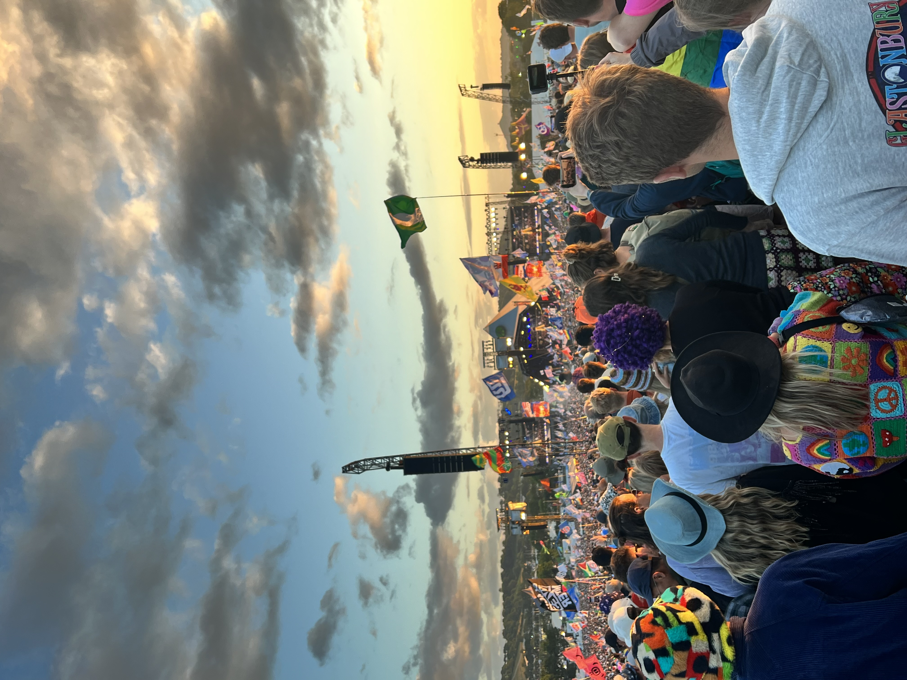
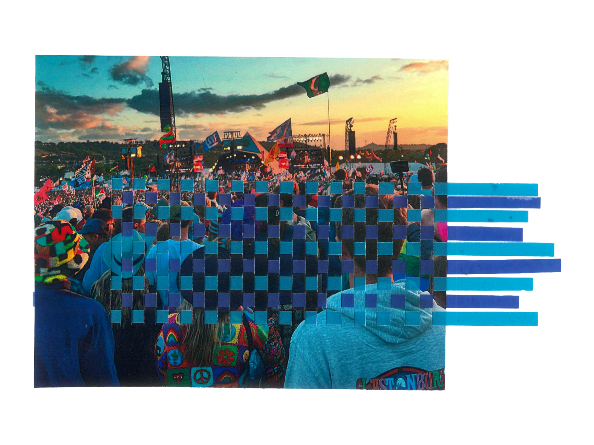
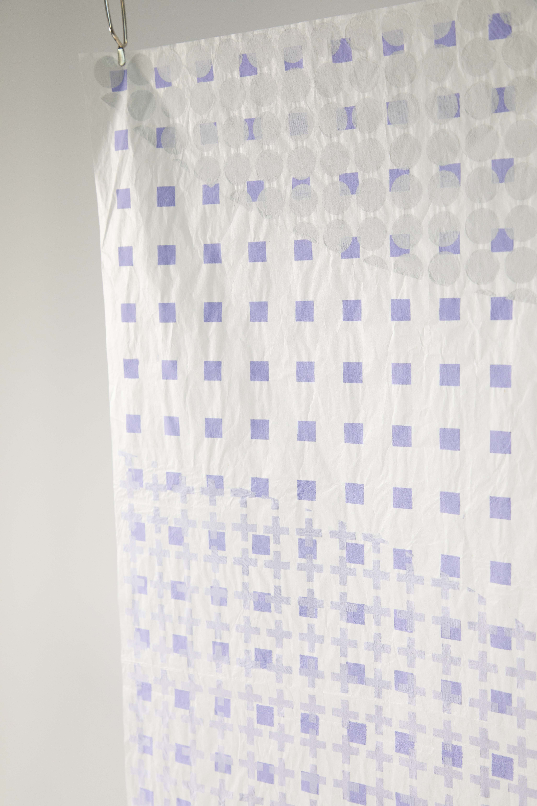
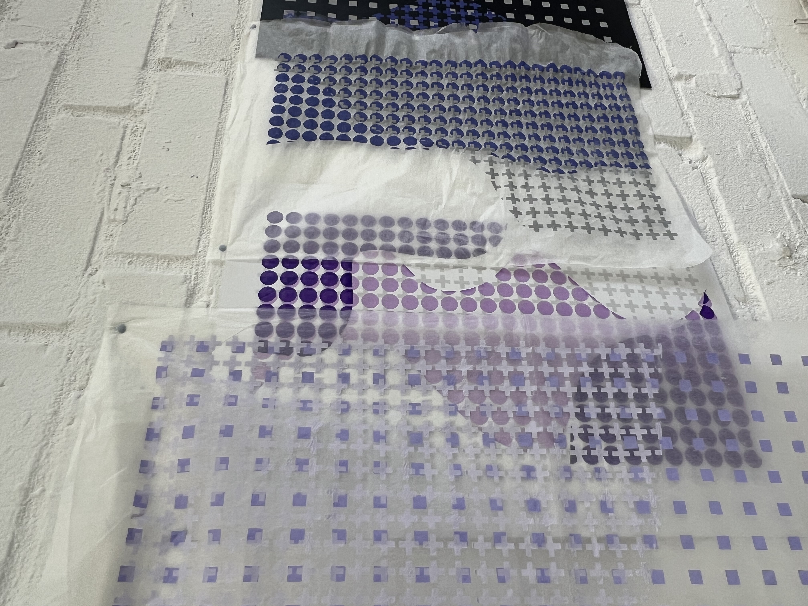
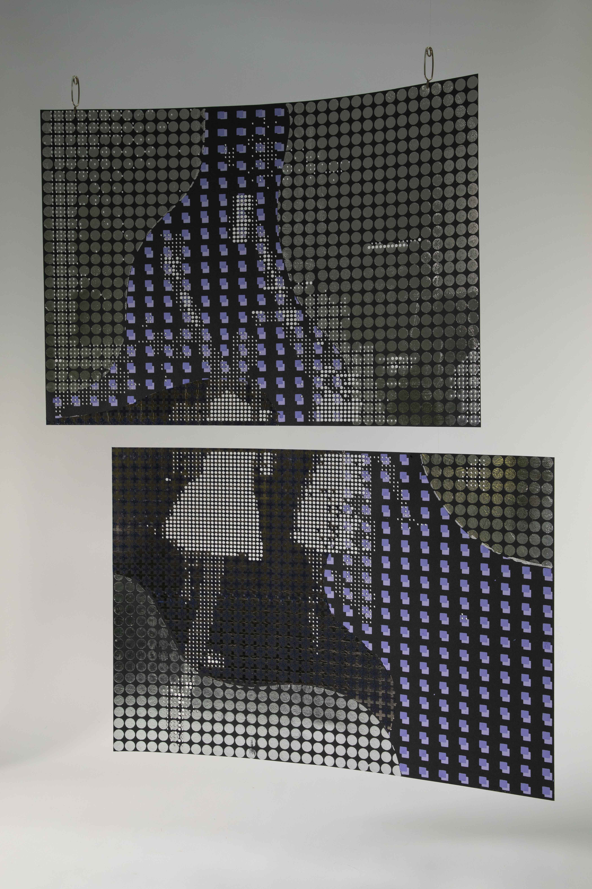
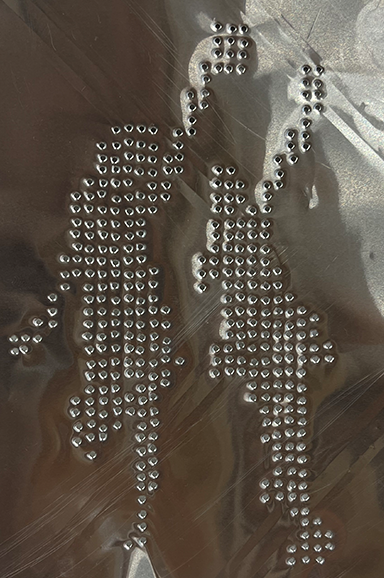
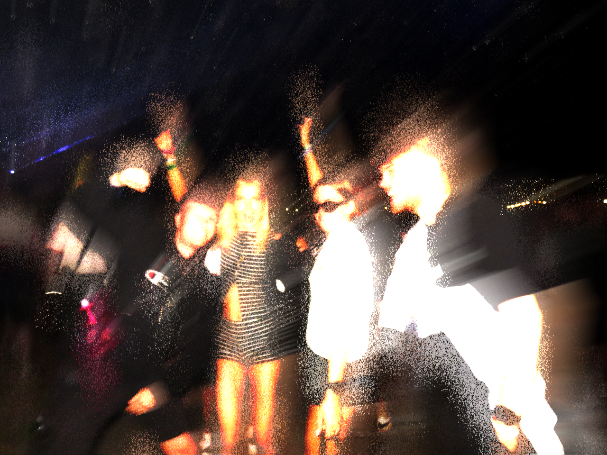

An Ode to the dancefloor
An Ode to the Dancefloor explores rave culture through collective movement, shared experience, and computational design. Dancefloors are spaces where bodies, rhythm, sound, and light come together to create energy and movement.
Using Creative Computing as a framework, this project translates these crowd dynamics into visual and textile outcomes through p5.js and TouchDesigner.
Inspired by the flow and rhythm of people moving together, I use algorithmic processes to generate layered patterns, repeated forms, and shifting compositions that evolve between digital and physical making.
Combining code, animation, projection, print, and textiles, this work pushes textile design beyond static surfaces and into immersive, responsive spaces. This project explores how movement, technology, and material can work together to create designs that feel fluid, dynamic, and alive.













